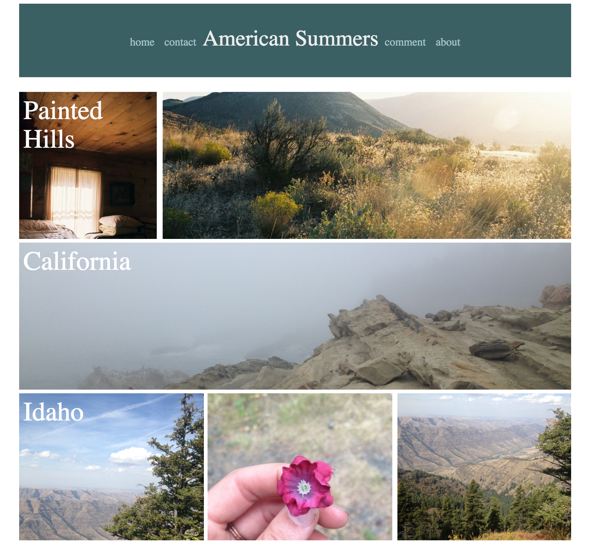
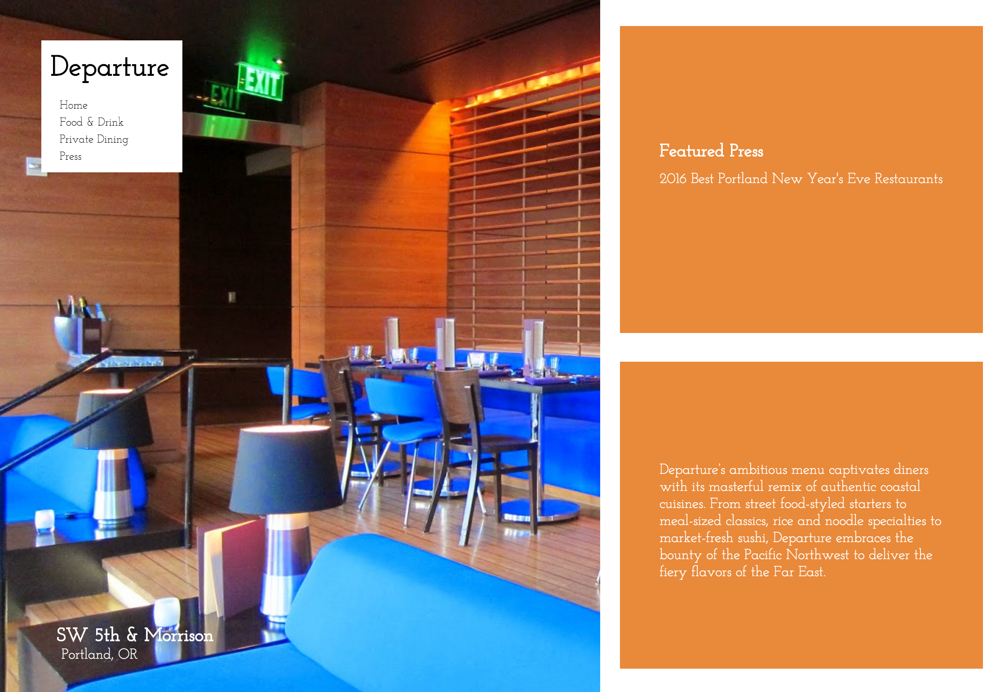

Projects

View webpage View Github
American Summers
A personal blog website made as an exercise exploring the CSS preprocessor, Sass and its library, Bourbon. The site is responsive at three breakpoints. It takes advantage of Sass's mixin capabilities, as well as its variables and extends.
- CSS/Sass
- Bourbon
- UX/UI Design
- HTML
- Media Queries
View webpage View Github

View webpage View Github
The Departure
A responsive web layout for the local Portland restaurant, The Departure. This site implements six media queries to cover responsivity at all media screen sizes using floats. The design follows those of the modrian style for web developement with three main sectional centerpieces.
View webpage View Github